O acesso ao painel da concessionária é exclusivo por certificado digital A1 ou A3, ICP-Brasil. O CPF ou CNPJ do certificado deve coincidir com o documento de um usuário cadastrado e ativo da concessionária.
O certificado de autenticação do usuário é distinto do certificado de assinatura do arquivo. A assinatura do .p7s exige e-CNPJ da concessionária, idêntico ao CNPJ_DISTRIBUIDORA do registro 0000. Autenticação com e-CPF não substitui essa exigência.
A entrada do sistema é a tela Acessar sistema. Ela admite e-mail e senha para os demais contextos e, para a concessionária, o atalho Acesso Concessionária.

O atalho Acesso Concessionária abre o cartão Acesso da concessionária, com o botão Entrar com certificado digital e as orientações sobre a escolha do certificado no navegador.

O navegador solicita a escolha do certificado no início da autenticação. Se a janela não for exibida, não há certificado compatível instalado no navegador ou no sistema. Para trocar de certificado, é necessário sair, fechar totalmente o navegador e reabrir a página: o navegador pode reutilizar o certificado já escolhido enquanto permanecer aberto.
Quando o certificado é apresentado ao host de autenticação, o sistema identifica o documento e, se o usuário estiver cadastrado e ativo, concede o acesso ao painel. Se a sessão anterior tiver sido encerrada no mesmo navegador, a tela permanece visível com o certificado detectado, para nova autenticação pelo mesmo botão.

Se nenhum certificado for apresentado, o acesso é recusado e a recusa é exibida na própria tela.

| Condição | Efeito |
|---|---|
| Certificado não apresentado | Acesso recusado |
| Certificado não validado ou fora da validade | Acesso recusado |
| CPF/CNPJ inexistente no cadastro da concessionária | Acesso recusado |
| Usuário inativo | Acesso recusado |
| Usuário sem contexto de concessionária | Acesso recusado |
O aceite identifica a concessionária no cabeçalho e abre o painel. O menu à esquerda reúne os módulos operacionais:
- Dashboard — tela inicial após o acesso;
- Municípios — vínculos da concessionária com os municípios;
- Planta energética — download da planta do município no período escolhido, para montar o Extrato IP;
- Declarações — UCS, Extrato COSIP/CIP, Extrato IP e Conciliação Financeira;
- Cargos e Usuários — usuários e cargos da concessionária.

O sino do cabeçalho concentra as notificações do sistema. O ícone de usuário abre o menu da sessão.
O encerramento ocorre pela opção Sair no menu do usuário. O sistema retorna à tela de acesso da concessionária. Se o navegador permanecer aberto, o certificado anterior pode ser reapresentado automaticamente (Figura 3).

O módulo Municípios apresenta os vínculos da concessionária com os municípios. Não há cadastro, alteração, exclusão nem consulta individual neste painel: a listagem identifica cada município e a situação do vínculo, antes de gerar a declaração.
As colunas são razão social, CNPJ, código IBGE e status do vínculo. Não há data de criação nem ações. Os filtros são razão social, CNPJ, código IBGE e situação (Ativa, Inativa, Suspensa, Cancelada).

O arquivo deve conter apenas municípios com vínculo ativo. Vínculo inativo, suspenso ou cancelado não admite bloco 0100 (MUN-11). Município sem fato gerador na competência é omitido; não existe registro de município sem movimento (EST-04).
A regra de conteúdo do arquivo está no Manual da Concessionária, seção 2.2.
O cargo define o que o usuário da concessionária pode consultar e operar no painel. O sistema entrega um cargo padrão, imutável. A concessionária cria os demais cargos, escolhe as permissões e os atribui aos seus usuários.
A listagem reúne o cargo padrão e os cargos criados pela própria concessionária. Filtro por nome recorta a relação. O cargo padrão exibe apenas consulta; os cargos da concessionária exibem consulta, alteração e exclusão.

O cargo Concessionaria é criado pelo sistema e é compartilhado entre as concessionárias. Não admite alteração de nome, de permissões nem exclusão: na listagem aparece somente a consulta. Ele reúne as capacidades do contexto da concessionária (dashboard, municípios, planta energética, declarações e gestão de usuários e cargos). O campo Usuários Associados conta somente os usuários da concessionária que consulta o cargo. A mesma conta vale para os cargos criados pela própria concessionária.

O cadastro exige nome e ao menos uma permissão. O nome não pode coincidir com outro cargo do mesmo contexto, inclusive o padrão. As permissões vêm agrupadas por módulo; cada grupo admite seleção total ou item a item. Há também seleção geral de todas as permissões.

| Grupo | Capacidades |
|---|---|
| Dashboard | Acessar dashboard |
| Municípios | Consultar municípios vinculados |
| Planta energética | Exportar planta energética |
| Declarações UC | Consultar, enviar, corrigir/atualizar, baixar erros de validação |
| Declarações Extrato COSIP | Consultar, enviar, corrigir/atualizar, baixar erros de validação |
| Declarações Extrato IP | Consultar, enviar, corrigir/atualizar, baixar erros de validação |
| Declarações Conciliação Financeira | Consultar, enviar, corrigir/atualizar, baixar erros de validação |
| Usuários e Cargos | Consultar ou gerenciar usuários; consultar ou gerenciar cargos |
Somente o cargo criado pela concessionária admite alteração e exclusão. A alteração reedita nome e permissões, com as mesmas exigências do cadastro. A exclusão é recusada enquanto houver usuário associado: é necessário retirar o cargo dos usuários antes.
| Condição | Efeito |
|---|---|
| Cargo padrão (Concessionaria) | Somente consulta |
| Cargo da concessionária, sem usuários | Consulta, alteração e exclusão |
| Cargo da concessionária, com usuários associados | Exclusão recusada até remover a associação |
| Nome já existente no contexto | Cadastro ou alteração recusados |
| Nenhuma permissão selecionada | Cadastro ou alteração recusados |
A atribuição ocorre no módulo Usuários, no cadastro ou na alteração do usuário. Pelo menos um cargo é obrigatório. Os cargos disponíveis são o padrão e os criados pela concessionária. A inclusão de novos usuários no painel cabe ao usuário principal da concessionária.

O módulo Usuários cadastra as pessoas que acessam o painel da concessionária. Cada usuário tem documento (CPF ou CNPJ do certificado de autenticação), situação ativo/inativo e ao menos um cargo. O cargo determina o que a pessoa consulta e opera; o documento é o que o sistema confronta no acesso por certificado (seção 1).
A listagem apresenta nome, cargos, e-mail, documento, status e data de criação. Filtros por nome, e-mail e cargo recortam a mesma relação. A inclusão de novos usuários aparece somente para o usuário principal da concessionária, com permissão de gerenciar usuários. Cada linha oferece alterar e, nas demais contas, excluir.
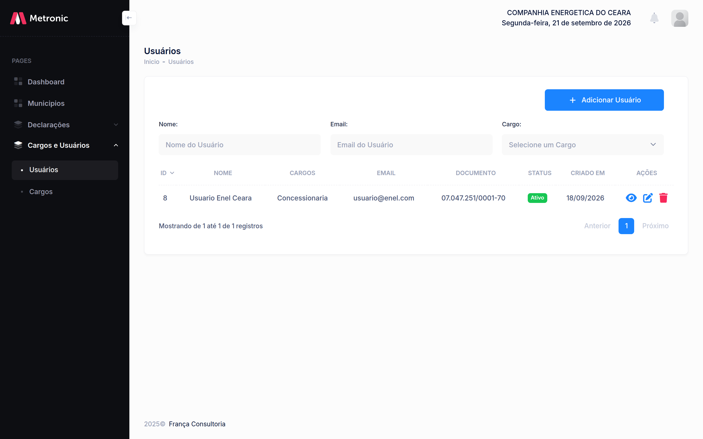
O cadastro exige nome, e-mail, documento (CPF ou CNPJ do certificado) e pelo menos um cargo. A situação inicia como ativo. O acesso ao painel permanece pelo certificado digital (seção 1.2). E-mail e documento não podem coincidir com outro usuário já cadastrado.
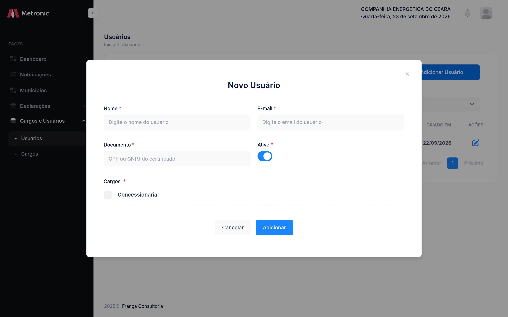
A alteração reedita nome, e-mail, documento, situação e cargos. A exclusão remove outro usuário da concessionária. A conta autenticada não exibe a ação de excluir, e o sistema recusa a operação se ela for solicitada. Usuário inativo permanece na listagem, mas o acesso por certificado é recusado (seção 1.4).
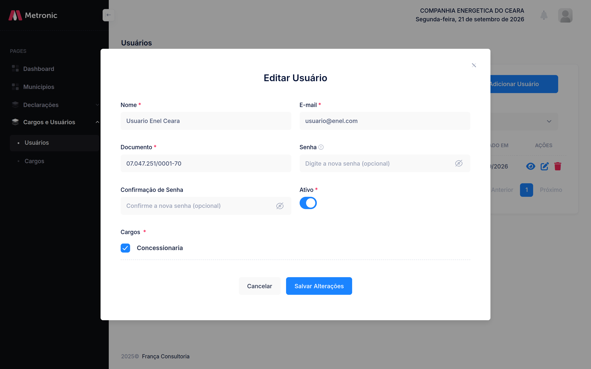
| Condição | Efeito |
|---|---|
| Usuário sem ser o principal da concessionária | Adicionar Usuário não é exibido |
| E-mail ou documento já cadastrado | Cadastro ou alteração recusados |
| Nenhum cargo selecionado | Cadastro ou alteração recusados |
| Conta autenticada | A listagem não oferece excluir; a exclusão da própria conta é recusada |
| Usuário inativo | Permanece na listagem; acesso por certificado recusado |
| Documento do certificado ≠ documento cadastrado | Acesso recusado (seção 1.4) |
O usuário autenticado no painel da concessionária é o que tem documento coincidente com o certificado apresentado, está ativo e possui cargo do contexto. A atribuição de cargos está na seção 3.6.
O menu Declarações reúne a entrega dos arquivos .p7s. São quatro módulos — UCS, Extrato COSIP/CIP, Extrato IP e Conciliação Financeira — e as telas são as mesmas em todos: listagem, filtros, envio, validação, aceite e rejeição. O que muda é o título da página e o conteúdo do arquivo. Leiaute, ordem da obrigação e catálogo de mensagens permanecem no Manual da Concessionária.
Cada módulo é uma entrega separada. O envio de um não substitui o dos demais. Enquanto UCS ou Extrato COSIP/CIP estiver em validação ou processamento, o painel recusa um novo arquivo de qualquer um dos dois. Extrato IP e Conciliação Financeira recusam apenas um novo arquivo do próprio módulo.
| Menu | Página | Título do envio |
|---|---|---|
| UCS | Declarações - UCS | Importar Cadastro de Ucs |
| Extrato COSIP/CIP | Declarações - Extrato COSIP/CIP | Importar Extrato COSIP/CIP |
| Extrato IP | Declarações - Extrato IP | Importar Extrato IP |
| Conciliação Financeira | Declarações - Conciliação Financeira | Importar Conciliação Financeira |
A listagem mostra as declarações municipais já aceitas. As colunas são município (razão social), protocolo, tipo, competência, status, protocolo da declaração retificada e ações. O protocolo longo aparece abreviado, com o início e o fim visíveis.
Os filtros são os mesmos nos quatro módulos: protocolo, tipo de declaração (Original ou Retificadora), competência (mês e ano), município e protocolo da declaração retificada. Nova Declaração abre o envio e só aparece para quem tem permissão de entregar o módulo.
A lista não traz arquivo rejeitado nem entrega ainda em validação. Entram somente as declarações municipais com status Concluído ou Retificada. A consulta abre o detalhe; o download do arquivo aparece na linha, exceto quando o status é Retificada.
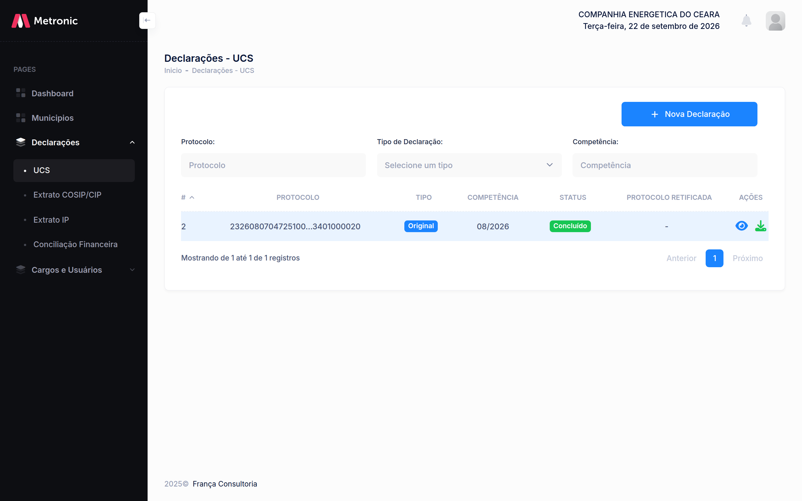
| Coluna | Conteúdo |
|---|---|
| Município | Razão social do município da declaração |
| Protocolo | Protocolo da declaração do município |
| Tipo | Original ou Retificadora |
| Competência | Mês e ano da declaração |
| Status | Concluído ou Retificada |
| Protocolo Retificada | Protocolo da declaração municipal substituída; vazio quando não houve retificação |
A consulta, intitulada Detalhes da Declaração, mostra município, protocolo, competência, data do protocolo, tipo e módulo. Na retificadora, também mostra o protocolo da declaração retificada. O arquivo pode ser baixado nesta tela, salvo quando a declaração está retificada: nesse caso o download fica indisponível.
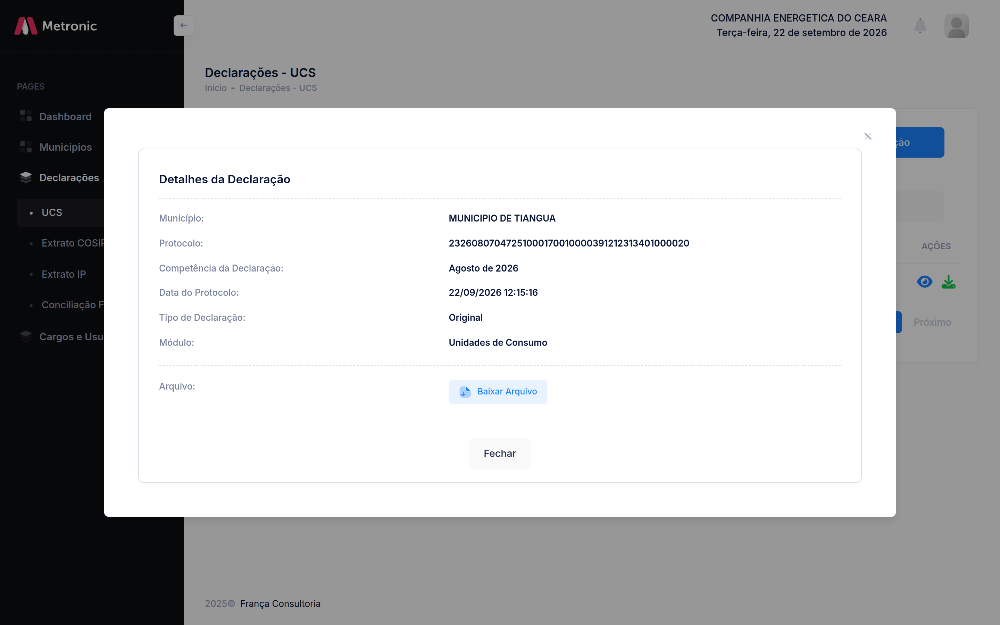
Nova Declaração abre o mesmo formulário nos quatro módulos. O único campo é o arquivo .p7s, arrastado para a área ou escolhido no computador. O formato aceito é P7S, um arquivo por envio. Importar inicia a validação; Cancelar fecha a janela sem enviar.
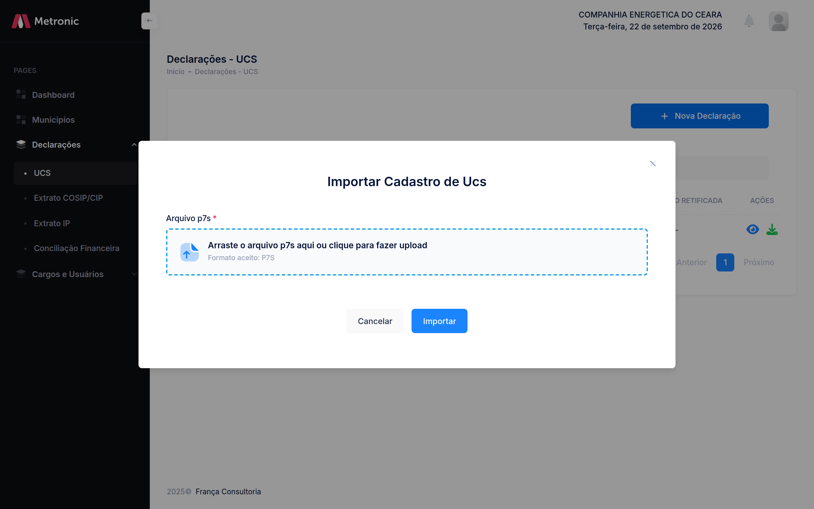
Arquivo ausente, formato diferente de P7S ou tamanho acima do limite é recusado antes da validação de conteúdo. Se já existir validação ou processamento em andamento de um módulo que bloqueia o envio, o painel recusa o arquivo e pede para aguardar a finalização. O aviso informa o módulo em andamento, o protocolo e a etapa atual.
| Módulo em andamento | Envios recusados até a finalização |
|---|---|
| UCS | UCS e Extrato COSIP/CIP |
| Extrato COSIP/CIP | Extrato COSIP/CIP e UCS |
| Extrato IP | Extrato IP |
| Conciliação Financeira | Conciliação Financeira |
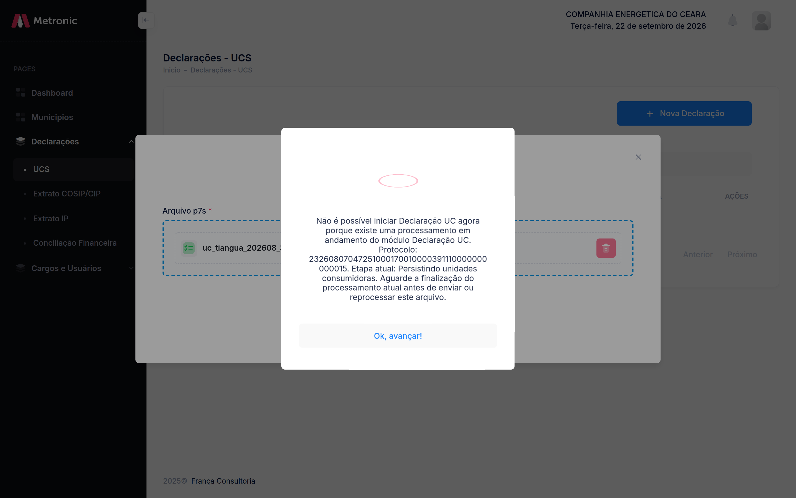
Depois do envio, a mesma janela passa a acompanhar a validação. O título é Validando arquivo, com a situação Em andamento, o nome do arquivo, a barra de progresso e a lista de etapas. A janela pede para permanecer aberta até o comprovante de entrega. Enquanto a validação não termina, ela não se fecha pelo fundo nem pela tecla Esc.
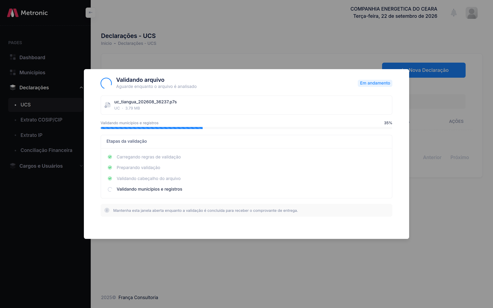
Se a consulta do andamento falhar várias vezes seguidas, a janela informa Acompanhamento indisponível e orienta a atualizar a listagem para ver o estado da entrega.
No aceite, o título muda para Arquivo aceito e a situação para Aceito. O comprovante traz o protocolo e o identificador da declaração. A orientação é guardar o número do protocolo; o tratamento posterior segue no sistema. Se houver alertas, a janela oferece Ver Alertas de Validação, com código, linha, campo, mensagem, valor encontrado e valor esperado, além do relatório completo para download.
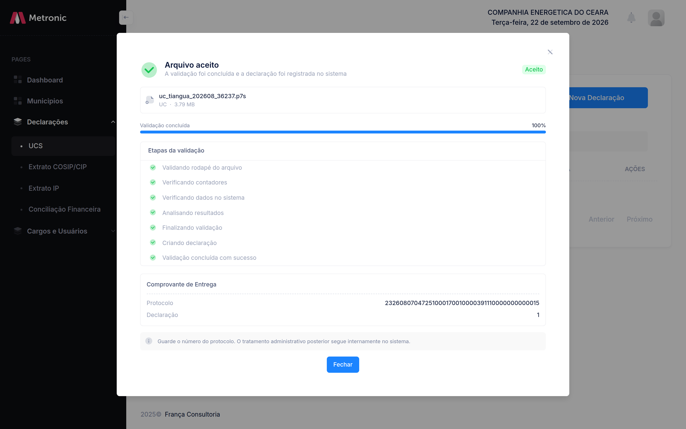
O alerta não rejeita o arquivo. Encerrada a janela, as declarações municipais dessa entrega passam a constar na listagem com status Concluído.
Quando a validação encontra erro bloqueante, o título é Validação encontrou erros e a situação é Erros. A barra indica Validação falhou, as etapas com inconsistência aparecem em vermelho e a mensagem pede para corrigir e reenviar o arquivo.
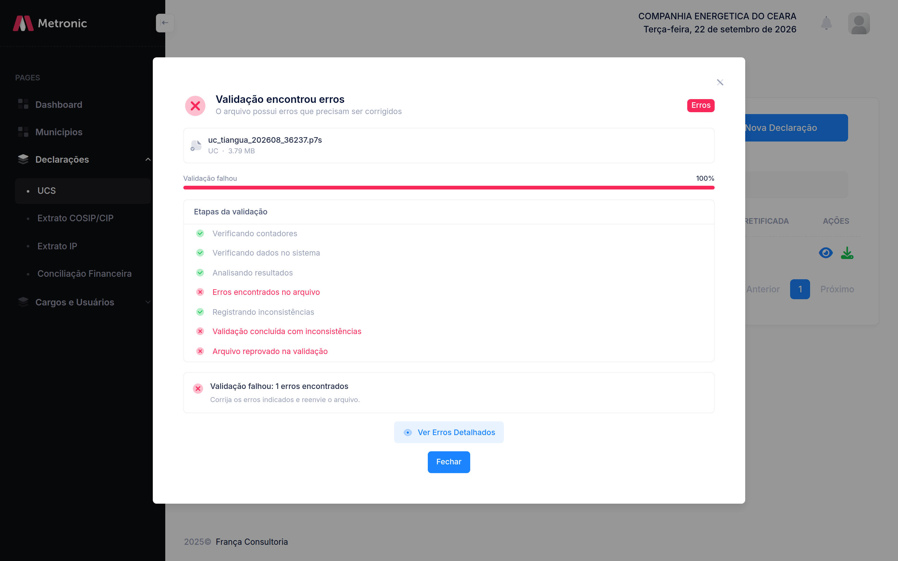
Ver Erros Detalhados abre o relatório na mesma estrutura dos alertas: resumo por categoria, amostra das ocorrências em cada categoria e o relatório completo para download, em Baixar Relatório e em Baixar TXT.
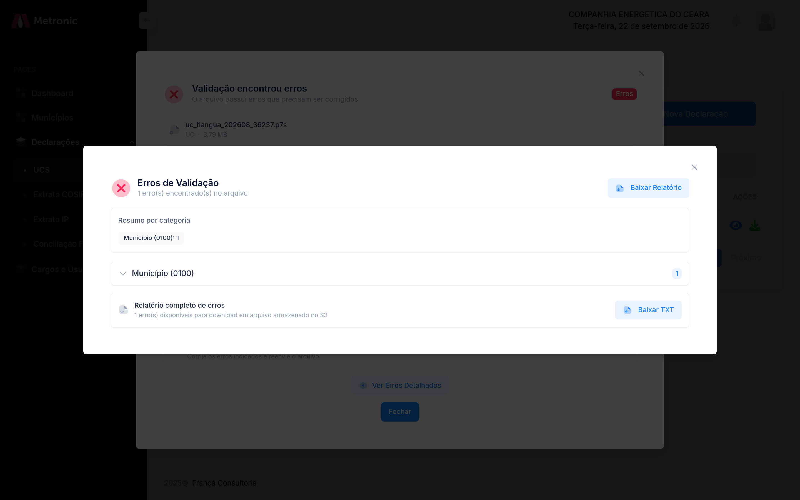
Arquivo rejeitado não gera declaração municipal e não aparece na listagem. Não há protocolo de município para essa entrega.
| Resultado na janela | O que a concessionária faz |
|---|---|
| Em andamento | Mantém a janela aberta até o comprovante |
| Aceito | Guarda o protocolo; a declaração municipal entra na listagem como Concluído |
| Aceito com alertas | Guarda o protocolo e consulta os alertas; o arquivo permanece aceito |
| Erros | Corrige o arquivo e envia de novo; a listagem não recebe essa entrega |
| Acompanhamento indisponível | Atualiza a listagem para ver se a entrega foi aceita |
A retificação usa o mesmo envio, com arquivo do tipo Retificadora. Depois do aceite, a declaração municipal anterior permanece na listagem com status Retificada e deixa de oferecer download. A declaração nova entra como Retificadora, com o próprio protocolo, e a coluna Protocolo Retificada mostra o protocolo da declaração municipal que ela substituiu.
Qual protocolo informar no arquivo e quais municípios podem ser retificados estão no Manual da Concessionária. O painel não monta o arquivo; ele recebe, valida e passa a exibir o resultado.
O módulo entrega à concessionária a planta de iluminação pública do município, no período escolhido, para montar o arquivo do Extrato IP. É somente download. A concessionária não grava planta, não importa planilha de inventário e não envia arquivo de planta por este painel. Quem mantém o inventário é o município.
O processador confere cada linha 0110 com o ponto e o medidor vigentes no período de faturamento da própria linha, não com o cadastro do dia do envio. O download serve para a concessionária copiar códigos, tipo de medição, medidor, equipamento, horas por dia e perda do reator como estavam naquele período.
O item Planta energética fica no menu, ao lado de Municípios. Ele só aparece para o cargo que tem a permissão Exportar planta energética. Sem essa permissão, o menu e o endereço da página ficam ocultos.
A lista de municípios traz apenas clientes com vínculo ativo com a concessionária logada. Vínculo inativo, suspenso ou cancelado, e município de outra concessionária, não entram na lista. A tentativa de baixar um desses municípios é recusada.
A tela pede o município, o início e o fim do período, nos dois casos em DD/MM/AAAA. O fim não pode ser anterior ao início. O campo Competência, em MM/AAAA, é atalho: ao escolhê-lo, o início e o fim passam a ser o primeiro e o último dia daquele mês. As datas continuam editáveis; o arquivo usa o intervalo que estiver nos dois campos no momento do download.
Baixar XLSX gera uma planilha com duas abas. Enquanto o arquivo é preparado, o botão indica que o download está em andamento. O painel não monta o .p7s, não calcula kWh, tarifa, leitura nem valor faturado.
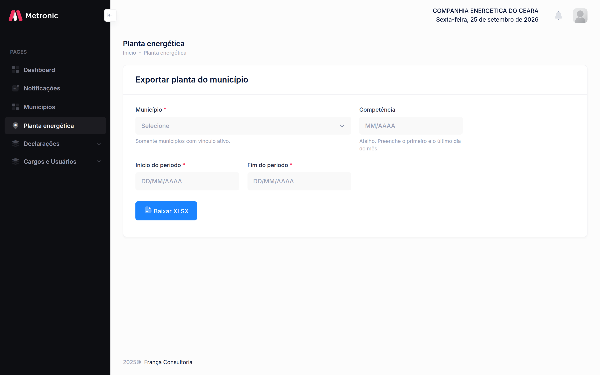
| Aba | O que contém |
|---|---|
| Inventário | Estado da planta no fim do período, no fim daquele dia |
| Alterações | Inclusões e alterações de ponto, medidor e instalação ocorridas dentro do intervalo |
Cada instalação de equipamento ocupa uma linha. Ponto sem equipamento sai uma vez, com as colunas de equipamento vazias. Quando o ponto tem medidor e equipamento, o medidor se repete nas linhas de equipamento. Vários medidores no mesmo ponto aparecem na mesma célula, separados por ponto e vírgula. Ponto, medidor e instalação inativos, em manutenção, pendentes, danificados ou removidos entram na planilha com o status visível: omiti-los esconderia um código que o arquivo ainda pode informar.
| Coluna | Uso no registro 0110 |
|---|---|
| Código do ponto na concessionária | CODIGO_PONTO_IP_MUNICIPIO |
| Código municipal | CODIGO_IP_MUNICIPIO, quando houver |
| Tipo de medição | Estimado ou medido no fim do período. Define se a linha leva equipamento ou medidor |
| Status do ponto | Informação de cadastro. O processador não rejeita o arquivo por esse status |
| Código do medidor, tipo de ligação e status do medidor | Ponto medido. O medidor precisa ter estado ativo ou em manutenção em algum momento do período de faturamento da linha |
| Código do equipamento, status da instalação e categoria | Detalhe do ponto estimado. O código do equipamento é texto livre: não encontrar a instalação não rejeita o arquivo |
| Horas por dia e perda do reator (W) | Valores da instalação no fim do período, para copiar em TEMPO_FUNCIONAMENTO e PERDA_REATOR |
A aba lista o que mudou dentro do intervalo, uma linha por campo alterado. O tipo Inclusão é o cadastro do registro; Alteração é a mudança de um campo já existente. A entidade é Ponto, Medidor ou Instalação. O identificador é o código do ponto, do medidor ou do equipamento.
| Coluna | Conteúdo |
|---|---|
| Data | Momento da inclusão ou da alteração |
| Tipo | Inclusão ou Alteração |
| Entidade | Ponto, Medidor ou Instalação |
| Identificador | Código do ponto, do medidor ou do equipamento |
| Campo | Nome do campo que entrou ou mudou |
| Valor antigo | Valor anterior; vazio na inclusão |
| Valor novo | Valor gravado naquela mudança |
A potência não vai no arquivo. Horas por dia e perda do reator saem da instalação, não do cadastro geral do equipamento. O relé, quando existir, é outra linha de equipamento: a perda dele não entra na perda do reator da lâmpada.
Na linha de equipamento do ponto estimado, TEMPO_FUNCIONAMENTO, PERDA_REATOR e DIAS_FUNCIONAMENTO são obrigatórios. Zero é valor preenchido. Se o consumo dessa linha for maior que zero, tempo e dias também precisam ser maiores que zero; perda zero continua válida. Consumo zero com os três campos zerados é aceito. Na linha geral do ponto estimado, com o código de equipamento vazio, e na linha do ponto medido, os três campos são opcionais.
Campo em branco nessa linha de equipamento recusa o arquivo. A diferença entre o kWh declarado e a conta da planta não recusa. Depois do aceite, o município confronta o consumo. A fórmula usada nessa conferência é (potência em watts + perda do reator em watts) × horas por dia × dias / 1000. Instalação sem horas, sem perda ou sem potência fica como cadastro incompleto, e a declaração permanece aceita. Código de equipamento que não corresponda a uma instalação do ponto no fim do período também não rejeita a linha: a confrontação apenas registra que não houve base de cálculo.
O leiaute do registro, os códigos de erro e o exemplo de arquivo estão na Nota Técnica, seção 7, e no Manual da Concessionária. Este painel não substitui esse leiaute: ele só entrega a planta do período para a concessionária preencher o arquivo.